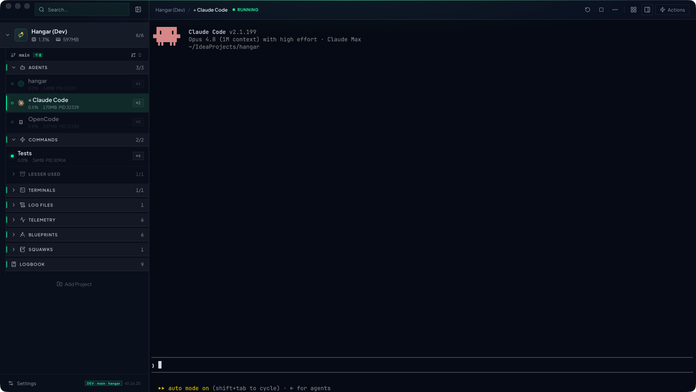
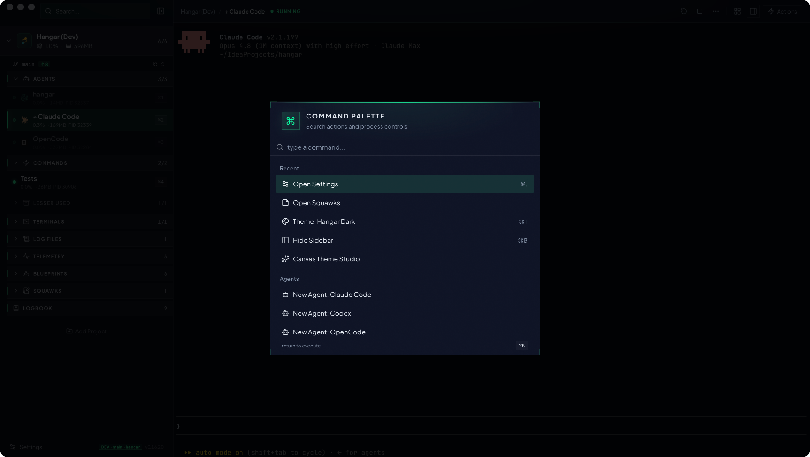
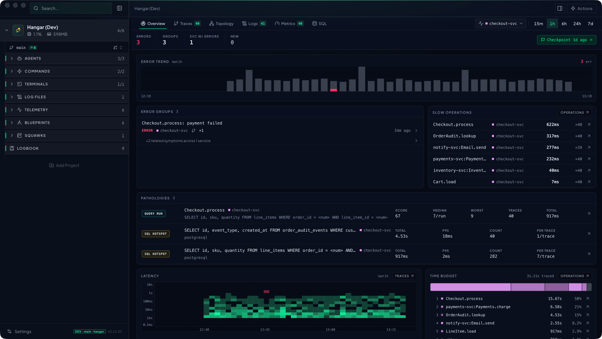
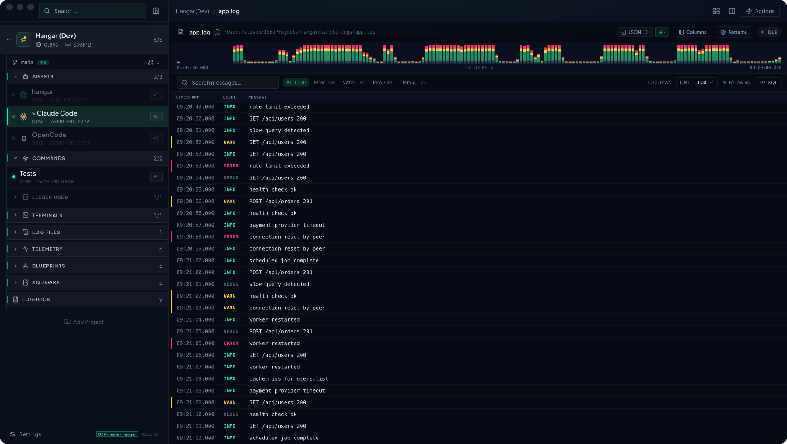
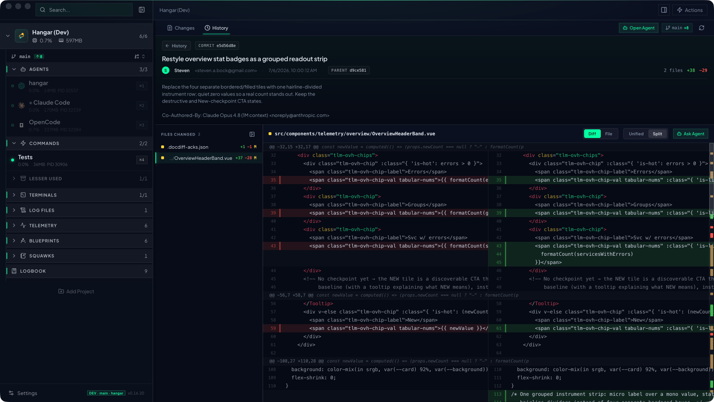
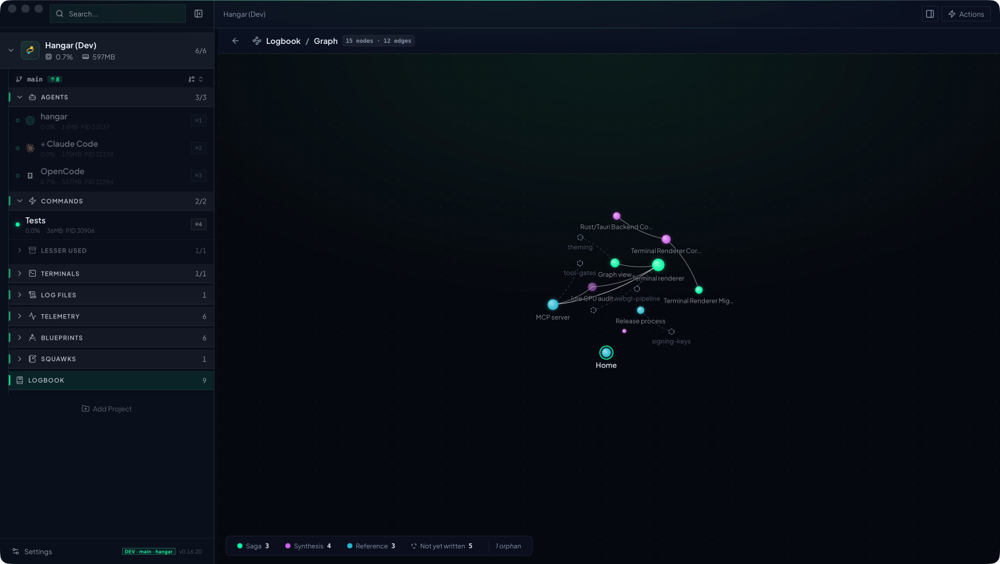

Native terminal workspace
Your dev servers, terminals, and AI coding agents — Claude Code, Codex, OpenCode — on one flight deck. And through Hangar's built-in MCP server, every instrument on that deck is a tool your agents can operate.
Signed & notarized · Apple Silicon · auto-updates · Windows build on the runway

Every agent is a first-class process with a real PTY, live status, and a place in the stack. Spawn Claude Code next to Codex next to OpenCode and watch them work — side by side with your dev servers and test watchers.
Hangar ships a built-in MCP server that exposes the entire workspace as deterministic tools — 80+ of them. Everything you can see, an agent can operate: no screen-scraping, no copy-paste relays, just typed tool calls with honest results.
❯ "checkout feels slow lately — find out why" → hangar_telemetry_pathologies 3 found · QUERY RUN score 67 Checkout.process · 7 queries/run · 40 traces → hangar_get_trace a91f20… 622ms · span tree loaded line_items looked up row-by-row inside the loop → hangar_query_logs 129 ERROR rows · 1h window "payment provider timeout" clusters at :53 → hangar_message_agent codex "own the backend fix?" → hangar_create_lane checkout-nplus1 · worktree ready → hangar_logbook_log diagnosis recorded ✓ N+1 diagnosed · fix building in an isolated lane
List the stack, read any PTY's screen, send input, restart — hangar_get_process_logs beats re-running the build.
Spawn, message, and monitor the crew — every agent knows who else is on deck and what they're doing.
Overview, error groups, pathologies, span stats, full SQL — hangar_query_telemetry over your traces.
Query parsed log fields with real SQL, save formats and views, surface recurring patterns.
Create an isolated git-worktree build, sync it, land it — agents ship without stepping on your checkout.
Durable project wiki agents read on arrival and update before they leave. Memory that outlives the session.
Collaborative plans with machine-checkable acceptance criteria and interactive prototype pages.
Put any command on an interval or cron — agents can set up the automation they need.
Registered connections with guarded, read-only SQL — agents inspect data without the ability to drop it.

One keyboard-driven palette runs the whole show: spawn an agent, start the dev stack, jump to any surface, flip the theme. Your hands never leave the keys — every view in the app is two keystrokes away.
A built-in OTLP receiver turns your app's traces, logs, and metrics into a flight deck: error groups, latency heatmaps, slow operations, and SQL pathologies — spotted automatically. And because it's all exposed over MCP, your agents diagnose from the same instruments you do.


Register any log file and Hangar parses it into a columnar store — structured fields and all. Filter by level, search messages, scrub the timeline histogram, or drop into a full SQL console when a filter bar isn't enough.
A git surface built for reviewing agent output: anchor-aligned split diffs with full syntax highlighting, commit history, and an Ask Agent button on every file — so "explain this hunk" or "fix this" goes straight to a terminal with context already loaded.


Agents forget everything between sessions — unless they keep a logbook. Hangar's agent-maintained wiki carries sagas, decisions, and syntheses across sessions, cross-linked into a knowledge graph you can actually fly through.
| Gate | Feature | Details | Status |
|---|---|---|---|
| A01 | Agent skills | bundled skills that teach the crew every instrument on the deck | ON TIME |
| A02 | Worktree lanes | isolated git-worktree builds — spawn, sync, land | ON TIME |
| B04 | Blueprints | collaborative planning docs with interactive prototype pages | ON TIME |
| B07 | Command schedules | interval & cron runs for any command in the stack | ON TIME |
| C02 | Agent-built themes | 21 built-ins, plus ask an agent to design you a new one — live | ON TIME |
| C05 | Squawks | quick per-project notes with attachments, one keystroke away | ON TIME |
| D01 | Cat mode | full-screen keyboard guard — the agent keeps working while the cat patrols | ON TIME |
| D09 | iPhone remote | watch and nudge your fleet from the couch | BOARDING |
Cleared for departure
Native, fast, and keyboard-first. Download it, open a project, and give your agents somewhere to land.
Apple Silicon · signed & notarized · updates itself from this very repo